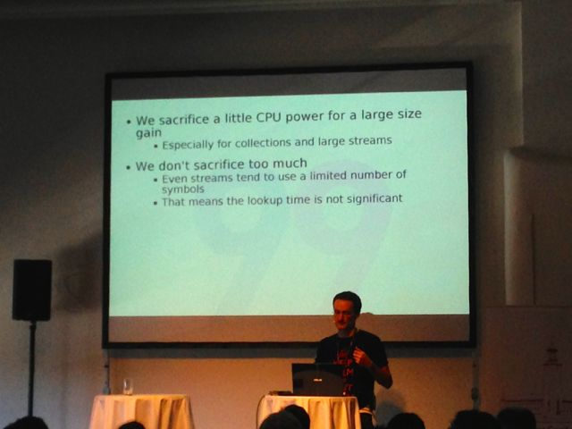
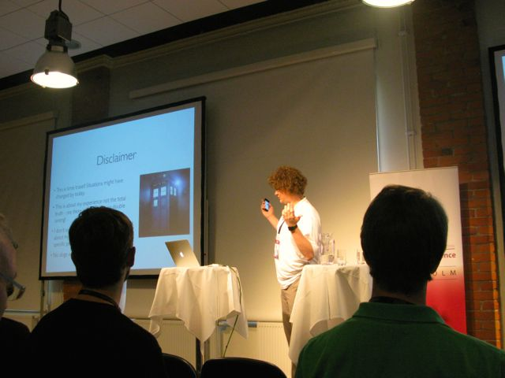
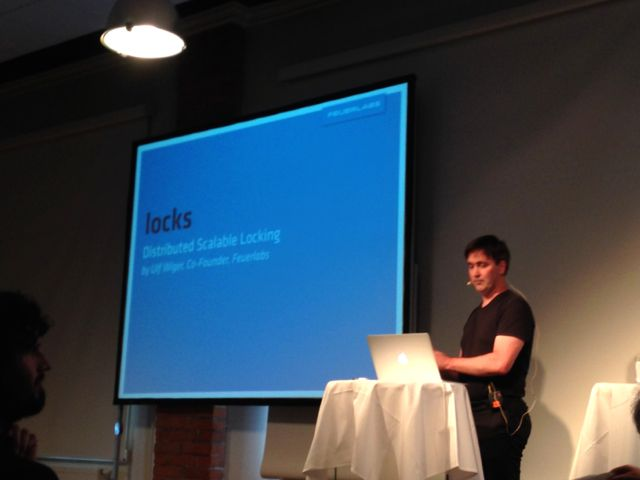
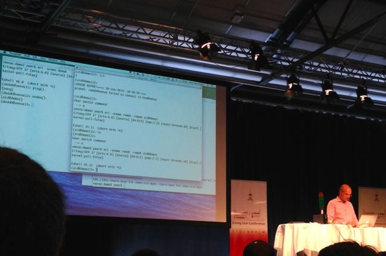
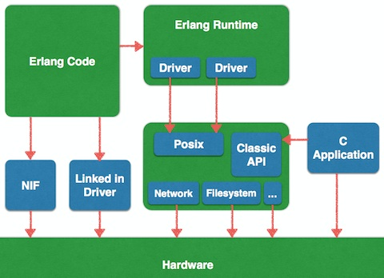
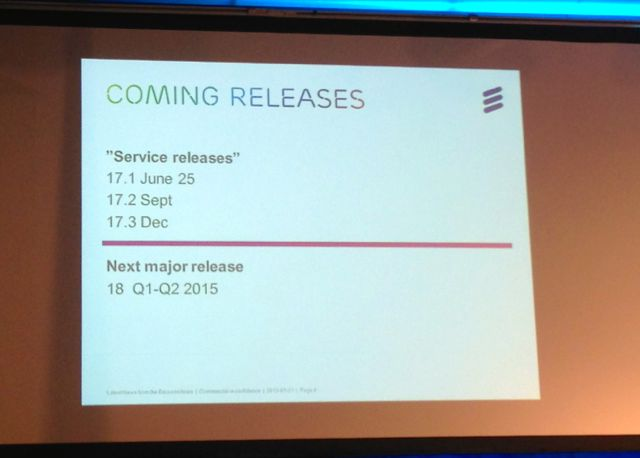
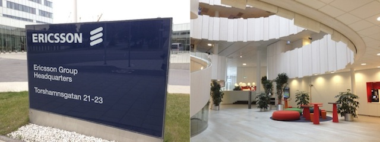
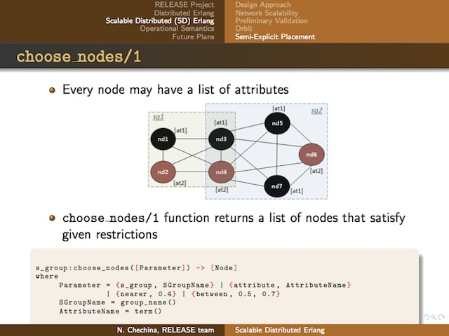

Erlang User Conference 2014 in Stockholm
June 16, 2014I attended and made a presentation at Erlang User Conference 2014 - the 20th Conference in Stockholm, which is a two-day tech conference focused on the Erlang programming language. It had very informative sessions for me.

- Tracks:
I share several impressive sessions in this conference.
1st Day - June 9th, 2014
Scaling and High Performance Storage System: LeoFS - Yosuke Hara
I made a presentation about design and architecture of LeoFS as well as demonstrate how developers/users are able to easily run and manage LeoFS in their environments for 45min, which was forcused on the overview, the benchmark report and the multi datacenter replication.

I shared the future plan of LeoFS. We’re aiming to centralise huge amount and various kind unstructured data in LeoFS. We have been tackling to implement NFS Support as another way of the connection. Because we thought we support both S3/REST-API for online transaction and NFS not FUSE for backend services in order to realise DATA-HUB which is needed at our company and services.
Also, Rakuten software engineer, Hiroki, He shared LeoFS administration at Rakuten for 7min in this presentation. He introduced two use cases of LeoFS, which are the storage platform and the file sharing service for in-house.
I had the great opportunity to deliver the presentation at the EUC2014 because our presentation got around 40 attendees and sevearal questions for it. And also, I acquired high potential users through this conference.
The Last REST Client You Will Ever Need - Loïc Hoguin

Loïc, who started the new project - bed-project. He mentioned BED - Binary Electronic Data is the new data format instead of JSON or XML or MsgPack or HTML when using REST-API.
- Goal:
- Hyperlinks and link relations
- Binary, explicit sizes, efficient to parse
- Small, exponentially smaller the larger the data gets
- Good type coverage, extensible
- No NULL value
- Fully specified
- Binary Electronic Data specification
- This binary data serialization format was created for use in RESTful services or with Websockets. Compared to most other formats, it comes with three special types: hyperlinks, symbols and RFC 3339 dates.
I expect he release a brilliant product neer the future similar to Cowboy.
Building a Cloud with Erlang and SmartOS - How Hard Could it Possibly Be? - Heinz Gies

Heinz, who has been providing and developing Project FiFo from 2012, which is an open-source Cloud Management and Orchestration system for SmartOS virtualisation environments.
He shared some of the issues throughout FiFo's history:
- The fail of Clojure Script
- The fail of a single host
- The fail of distribution
- The fail of storing JSON
- The fail of CAP
He learned what from several failures and introduced how it solved. The fail of distribution and The fail of CAP were very informative talks for me.
Locks - Erlang-style Scalable Distributed Locking - Ulf Wiger

Locks project implements a powerful locking library, which manages to perform deadlock detection in an scalable manner. The algorithm is designed in 1993. Also, from 2012 to 2013, he expanded it as follows:
- Read and Write locks
- Hierarchical locks
- Multi-node locks
- gen_leader-type behavior
Also, it is based on computing potential indirect dependencies and informing dependent transactions in a fill-in-the-blanks manner.
- Related algorithms:
- Repository:
This session was very important for me because I'm planning to design and implement the lock-mechanism in LeoFS from a couple of months.
2nd Day - June 10th, 2014
Heavy Industry Erlang - Peer Stritzinger

Peer Stritzinger, who introduce a short overview of standardized programming languages used in PLC. He has been using RTEMS Realtime Operating System which is a open-source hard-realtime operating system for small embedded systems.
- RTEMS's features:
- For Hard-Real-Time and/or Embedded Applications
- Small Resource Usage
- Reliable Realtime Behaviours with pluggable Schedulers
- Posix API
- Processes are actually threads
- No virtual memory
- No memory protection
- Runs on basically all 32bit Architectures
- SMP Support

His project - GRISP is Erlang on RTEMS which realized Hard Realtime Erlang Processes.
- Hard Realtime Erlang Processes:
- Fixed two part Heaps
- Optional interruptible GC
- Crash on Deadline Miss or out of Heap
- Optional Auto-Restart
- Static analysis on Communication Graph
I was really interested in Erlang on RTEMS - embedded Erlang through this session. So I'll look into the potential in our company/services.
Latest News from the OTP Team - Kenneth Lundin
Erlang OTP TEAM shared several plans which is included in the next minor and major version.
Plan:
- About
Mapas one of the new features of Erlang 17 - Planning to improve binary-related functions
- Planning to Chage the license from EPL - Erlang Public License to Apache License Version 2.0
- About
Release Schedules:

3rd Day - June 11th, 2014
I attended at the Tutorials which is a part of the Erlang conference at Ericsson HQ. It had very informative tutorials for me as follows:
- Scalability and the Erlang VM - Kostis Sagonas
- Scalable Distributed Erlang - Natalia Chechina
- Profiling with Percept2 - Huiqing Li & Simon Thompson

Scalable Distributed Erlang - Natalia Chechina
Natalia, who has been research Scalable Distributed Erlang which is an extension of distributed Erlang functional programming language for reliable scalability. The RELEASE project aims to improve the scalability of Erlang programming language because current Erlang has problem of scalability.

In the current survey, the project does not supoort dynamic configuration for Scalable Distributed Erlang. I hope they solve it, and also, I'll survey Scalable Distributed Erlang by myself because our projects - LeoFS and others need this mechanism.
Wrap Up
I had really great opportunity on Erlang User Conference 2014 because I delivered the presentation about our project and talked about LeoFS and technology topics with engineers as well as met my friends.
Furthermore, Thanks to Peer Stritzinger, I had interesting in a new category which is Erlang on RTEMS. And thanks to Natalia Chechina, I had recognized more scalability for Erlang with your project.
I'm looking forward to attend and make a presentation at this conference, again. So I keep growing our projects, going forward.